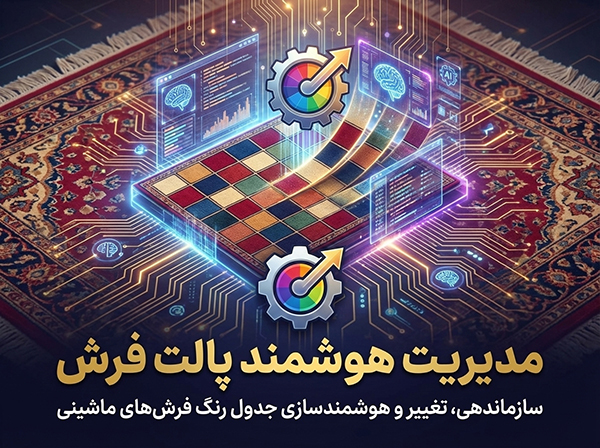
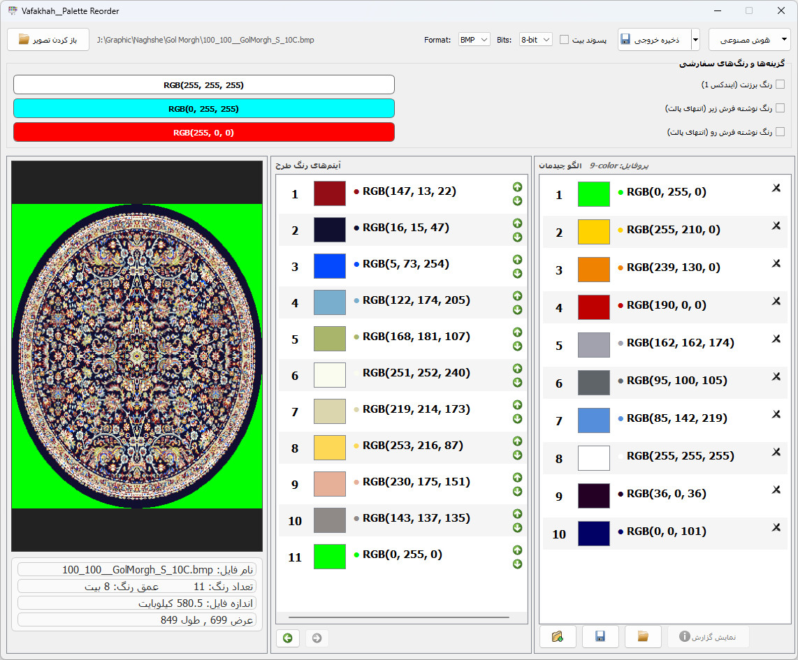
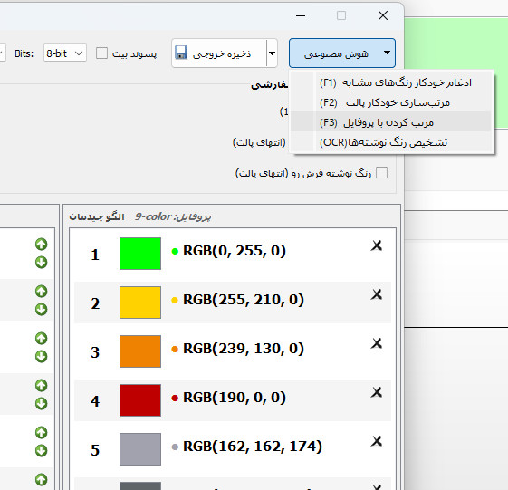
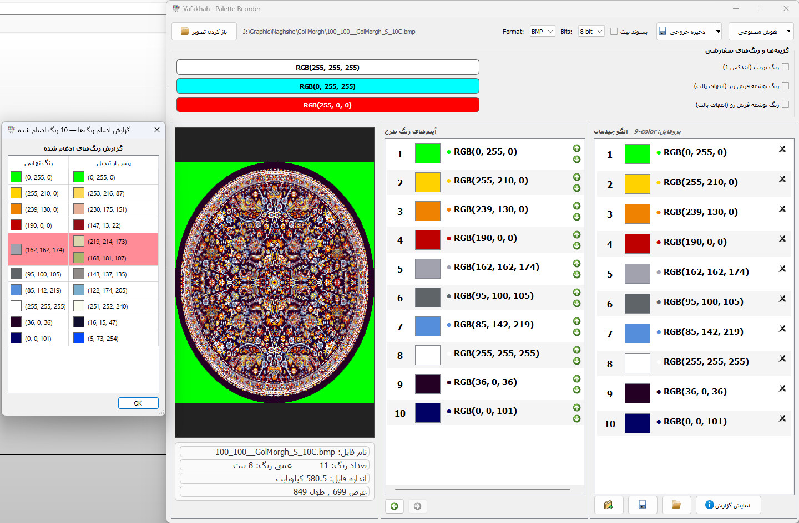

برنامه هوشمند مرتب سازی و سازماندهی پالت فرش های ماشینی، با قابلیت مرتب کردن پالت توسط پروفایل و ادغام رنگهای نزدیک بهم.

این نرمافزار یک ابزار تخصصی و هوشمند برای مرتبسازی و سازماندهی پالت رنگ در فایلهای نقشه فرش ماشینی است. طراحان فرش میتوانند با استفاده از این ابزار، فرآیند زمانبر مرتبسازی رنگها را به صورت خودکار و با دقت بالا انجام دهند.
از ویژگیهای مهم این برنامه میتوان به قابلیت ادغام رنگهای مشابه و مرتبسازی بر اساس معیارهای مختلف اشاره کرد که باعث بهینهسازی نقشه برای بافت میشود.
قابلیت مرتب کردن پالت رنگها با استفاده از پروفایلهای از پیش تعریف شده یا سفارشی.
شناسایی و مرج کردن رنگهای نزدیک به هم برای کاهش تعداد رنگهای اضافی در پالت.
مرتب کردن رنگها با توجه به درصد رنگ و شدت رنگ به صورت کاملا خودکار.
ذخیره فایلها در دو فرمت bmp و pcx. فرمت pcx کاملا با دستگاههای بافت تکسیما سازگار است.
آشنایی بیشتر با امکانات نرمافزار
نگاهی به قابلیتها و رابط کاربری برنامه سازماندهی پالت رنگ



همین حالا برنامه سازماندهی پالت رنگ را دانلود کنید و کارایی خود را افزایش دهید.